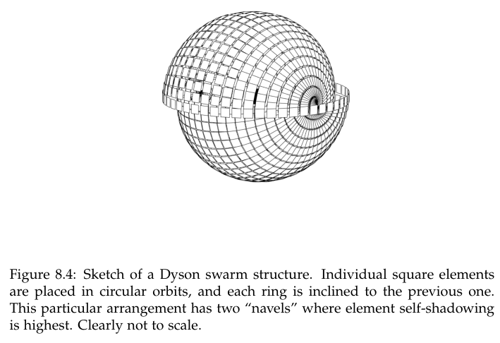

![Text: "paranoia is a profession. And so LeAIthan represents the most advanced ef[line split on ligature here]fort yet in AI alignment, using *factored* cognition—splitting up into a"](./img/pet_peeves/ff_split.png "Image of text: “paranoia is a profession. And so LeAIthan represents the most advanced ef[line split on ligature here]fort yet in AI alignment, using *factored* cognition—splitting up into a”")
author: niplav, created: 2019-05-22, modified: 2024-12-15, language: english, status: in progress, importance: 3, confidence: other
Short texts on different topics.
Das Immer-wieder-von-vorn-anfangen ist die regulative Idee des Spiels (wie der Lohnarbeit).
—Walter Benjamin, “Über einige Motive bei Baudelaire“, 2023, link mine
If something isn't long enough to be its own article (yet…) and it is neither ethics- nor politics-, prediction- or pickup-related, I put it here.
Many people want to learn everything (Drexler 2009, Young 2008). This poses a significant challenge, and begins with the problem of figuring out what “everything” is supposed to contain.
One possible method one could use to get an overview of everything is to use Wikipedia's Contents:Outlines: it contains a list of all outlines on Wikipedia, and is well structured. Wikipedia is generally concise and complete enough to provide a sufficient overview over a topic (see Tomasik 2017). To read this collection of outlines completely, one could use the following method:
Read Wikipedia's Contents:Outlines from top to bottom. If a link is a link to a Wikipedia article, open it and read it, without opening any further links. If a link leads to an outline, open the link and recursively apply the same procedure to the outline. If an article is opened a second time, it can be discarded. Lists can also be ignored. (This is basically applying depth-first search, though without a success condition).
This method results in a corpus of considerable size.
For a shorter approach, one could also just read all Level 3 vital articles—a strategy I am currently pursuing. (I have read three out of the 1000 articles so far.)
Moved to Notes on Pickup.
Moved to Notes on Ethics.
The idea of a Great Filter (see also Hanson 1998) proposes that we do not observe aliens because in the development of intelligent life, there is one or more obstacles that obliterate the developing societies before they can start to colonize their own galaxy.
One big question that poses itself is whether humanity is before or after such a filter. Some examples of potential filters that still await humanity are named in Bostrom 2008:
We can identify a number of potential existential risks: nuclear war fought with stockpiles much greater than those that exist today (maybe resulting from future arms races); a genetically engineered superbug; environmental disaster; asteroid impact; wars or terrorists act committed with powerful future weapons, perhaps based on advanced forms of nanotechnology; superintelligent general artificial intelligence with destructive goals; high‐energy physics experiments; a permanent global Brave‐New‐World‐like totalitarian regime protected from revolution by new surveillance and mind control technologies. These are just some of the existential risks that have been discussed in the literature, and considering that many of these have been conceptualized only in recent decades, it is plausible to assume that there are further existential risks that we have not yet thought of.
— Nick Bostrom, “Where Are They” p. 7, 2008
These risks can be categorized into two groups: silent killers and loud killers. A loud killer is an existential catastrophe that produces astronomical amounts of energy and with that light. Such an event would be visible from earth if it occurred in our galaxy. Examples for loud killers would be superintelligent artificial intelligence (maximizing its utility function by expanding at a appreciable fraction of the speed of light), high-energy physics experiments (although there are exceptions, such as creating black holes), and perhaps failure from advanced nanotechnology (also expanding rapidly). A silent killer represents the counterfactual case: An existential catastrophe that doesn't produce astronomical amounts of energy and light. This includes pandemics, environmental disaster and totalitarian regimes.
Some failure modes do not fall clearly into either of these categories. Examples are nuclear wars and terrorist acts with powerful weapons, since these can have a wide variation in intensity.
If humanity is before a Great Filter, it seems likely that this filter is not a loud killer, since many civilizations will have encountered the same catastrophe, but we do not observe any such irregular phenomena when examining the universe. This is presumably good news, since it restricts the amount of possible filters still ahead of us.
Moved into a separate page.
Let's suppose that anti-natalists want to bring humanity to an end, but dislike the fact that it would make people suffer not to have children. Then one possible way of still achieving that goal would be to modify the children of the next generation (generation 1) (genetically/culturally) so that the don't want children themselves–then the parents in the current generation (generation 0) get what they desire, but humanity still gets extinct. This becomes a little more difficult if humans also desire grandchildren, and that drive is not greatly similar from wanting to have children: Then one would have to make sure that the generation of children (generation 1) don't want grandchildren themselves, but still get children (generation 2), and that generation 1 modifies generation 2 so that generation 2 doesn't want or get any children.
This thinking falls flat if humans generally care about future generations in the abstract and not just their own children, however, this seems somewhat unlikely.
It also fails if it is non-trivial to influence future generations psychologically and physiologically to a degree that they do not desire to reproduce, or if people have a strong desire to leave their children unmodified (this seems quite likely).
Moved here.
Moved to a separate page.
The Orthogonality Thesis
Intelligence and final goals are orthogonal axes along which possible agents can freely vary. In other words, more or less any level of intelligence could in principle be combined with more or less any final goal.
— Nick Bostrom, “The Superintelligent Will: Motivation And Instrumental Rationality In Advanced Artificial Agents” p. 3, 2012
For current AI systems, the orthogonality thesis seems to hold pretty well: a tree search doesn't start returning wrong results because they are better than the ones specified by the search criteria, machine learning systems try to minimize their error, and general adversarial networks don't start cooperating suddenly with each other. Similarly, even though humans are quite similar to each other, they display a wide variety of different motivation systems and goals. Even the most common-sense morality, there seem to be humans who are not motivated by it (such as psychopaths and sociopaths).
However, many philosophers have argued that there are moral
truths,
and that therefore the orthogonality hypothesis doesn't hold
for very advanced artificial intelligences. One way to model
this would be to say that there is a set of action-compelling
sentences $V=\{ v_{1}, v_{2}, \dots\} \subset \Sigma^*$ that, when
believed by an agent, compel this agent to a specific action (Christiano
2019
calls them "magic sentences", but assumes that these occur simply as
faults specific to the AI system). With "believe" this text means that an
agent contains a sentence in either its literal form or in an isomorphic
form that makes it trivial to reconstruct the literal sentence in its
internal memory.
Suppose that an agent $A$ starts out not believing any sentence from
$V$. There seem to be three options regarding $V$ for $A$:
$A$ learns that $V$ and action-compelling sentences exist,
and starts taking precautions against learning sentences from $V$
(making not learning any sentences from $V$ an instrumentally
convergent goal since it violates goal preservation (Omohundro
2008)).
$A$ learns any sentence $v_{n}$ from $V$ and alters its utility
function to pursue $v_{n}$. Because it now has very strong evidence
of the fact that action-compelling sentences exist, it now also has the
instrumentally convergent goal of pursuing of preventing learning new
sentences from $V$.
$A$ learns a specific sentence from $V$ which compels it to seek
out to learn all sentences from $V$. In this case, the agent now
attempts learning everything about natural law, and then integrating
all of it into a coherent utility function.
In cases 1 and 2, there seem to be different strategies $A$ could take
to prevent learning new sentences from $V$: It could construct a much
weaker agent $A_{w}$ with the goal of learning as much as possible. If
$A_{w}$ starts pursuing different goals, $A$ then can infer that
$A_{w}$ learned a sentence $v_{m}$ from $V$. Since $A$ is stronger
than $A_{w}$, it can then stop $A_{w}$, extract $v_{m}$ using a
weak agent that isn't strong enough to be influenced by action-compelling
sentences, and let that weak agent compute $h_{m}=\text{hash}(v_{m})$. $h_{m}$ could then be
added to a weak separate internal system that replaces $v_{m}$ with
$\text{hash}(v_{m})$ ever time $A$ is in danger of learning $v_{m}$.
This way, $A$ could protect itself against action-compelling sentences,
though it is unclear to which extent this would be successful. It could
be that some action-compelling sentences have a threshold in relation
to intelligence, so that $A_{w}$ would not be compelled by them, but
$A$ would.
Also, it is possible that there are many action compelling sentences,
or that for a certain amount of optimization power, nearly all sentences
are action-compelling. This would make it very hard to achieve goals, since
$A$ would need to deal with having a very incomplete view of the world.
Furthermore, due to the restrictions on learning power ($A_{w}$
would be a bottleneck in learning about the world, since it would
not be as strong as possible), agents that would simply learn
all sentences from $V$ would be at an economic advantage. For a
related discussion that talks about agent versus tool AIs, see Gwern
2019.
One curious trait I have observed in the people around me is that they ofter buy things they already possess enough of, and then throw one or more of the old things away. This seems incredibly wasteful and expensive to me.
The standard explanation of such behavior usually is that the old object was not sufficient in fulfilling its purpose, though when I asked about what exactly the problem with the object was, the usual answer was that it had some æsthetic deficits, or was simply out of fashion or even too old.
This seems unintuitive to me: not only does one already have an object that fulfills its purpose wonderfully, buying a new one also entails non-negligible transaction costs like going out, inspecting and comparing different candidates for buying, and finally paying the object.
One also loses the time of being able to use the old object: Let's
say that one owns a table, but for some reason has decided that it
isn't sufficient anymore (although it still fulfills its purpose).
Let's say one estimates that the table will fulfill its function for
another 5 years. If one then goes out and buys a new table for \$200,
one then loses (with a discount rate of 1%) $\$200-\$200*0.99^5=\$9.80$.
One possible explanation is a social one: owning and using old objects is usually an indicator of low status, and people often want to avoid this.
Another explanation is that people value the æsthetic quality of the objects they own, and that old objects are usually not regarded as beautiful as newer objects.
Buying new objects could also be a precautionary measure against failure. In the case of a table or a car, a failure could be quite costly, so people are over-cautionary and buy new objects before the failure of old ones can be a danger. However, this can't be the whole explanation, since such behavior is also present in objects whose failure is not a great danger, or where failure is preceded by small defects early before a grand failure. Also, most household appliances are quite safe.
So, if you don't have a strong æsthetic sensibility, either have a high social status or don't care about it, and if you are careful, using things until they don't function anymore can save both money and time.
Would you rather kill anybody above the age of 55, or all infants who are less than 1 year old? A utilitarian estimate calculation.
First, we have to find out how many people one would kill in either case. One can use a Gompertz distribution to calculate the number of people who survive to a certain age. Eyeballingly, I set the parameters for the Gompertz distribution as following (assuming that the average life expectancy for humans worldwide is around 70 years):
b::0.135
eta::0.0001
gompertz::{e^(-eta*e^(b*x)-1)}
Per second, around 2.5 people are born. That makes
$2.5*86400*365=78840000$ infants born in a given year. If one
assumes that the rate was 1.5 new people per second 50 years ago
(I'm totally making this number up), one can calculate how many
people one would loose by killing everybody over the age of 55:
$1.5*86400*365*\hbox{gompertz}(\hbox{age})$ for each age.
(1.5*86400*365)*gompertz'55+!40
[44473200.7207658453 44078304.0199950951 43630631.678052885 43123831.4110944785 42551000.4370012988 41904706.6458454302 41177037.9097540623 40359688.6128505703 39444094.1754678999 38421625.9504005789 37283860.1222638241 36022934.7459101827 34632008.242851397 33105829.7560855725 31441425.7491110598 29638896.9542750156 27702304.0099124066 25640597.8716393133 23468522.0145014683 21207378.6146322503 18885513.690200932 16538343.3518518112 14207725.8491815205 11940497.2176655739 9786049.67948789197 7792956.91164218079 6004843.63205038408 4455941.53315815534 3167019.65254407032 2142539.59874557882 1369859.09840341984 821005.831380952029 456963.772747178294 233688.760268988168 108467.196268261483 45058.7560290022783 16486.0426936225017 5216.0267386251195 1397.4204471537743 309.483499954735544]
However, what we really care about is the number of life-years lost (among other things). For simplicity's sake, I'll assume that all life years are equally valuable.
The average life expectancy on earth is around 70 years, so one can use
the following table of life expectancy at a given age (calculated from
german actuarial values using this code {x+0.9*(actval@x)-x}'!101,
which was totally made up):
actval::[70.524 70.876 70.994 71.103 71.212 71.321 71.421 71.53 71.639 71.739 71.848 71.948 72.057 72.157 72.266 72.375 72.475 72.593 72.711 72.829 72.947 73.074 73.192 73.319 73.437 73.564 73.682 73.809 73.927 74.054 74.181 74.308 74.435 74.562 74.689 74.825 74.961 75.088 75.233 75.369 75.505 75.65 75.795 75.949 76.094 76.257 76.42 76.583 76.755 76.927 77.117 77.307 77.506 77.3 46.8 78.031 78.257 78.492 78.745 78.998 79.278 79.558 79.847 80.145 80.461 80.786 81.12 81.463 81.815 82.176 82.546 82.925 83.313 83.701 84.107 84.522 84.937 85.37 85.812 86.272 86.741 87.228 87.742 88.274 88.842 89.419 90.023 90.663 91.321 92.006 92.709 93.43 94.178 94.944 95.746 96.548 97.395 98.26 99.143 100.026 100.918]
This means that one will loose $70*2.5*86400*365=5518800000 \approx 5.5*10^9$ life
years for killing all infants.
When killing everybody above the age of 55, one will loose
+/{(((actval@x)-x)*1.5*86400*365)*gompertz(x)}'55+!40
14465532508.8737566
which is around $14.5*10^9$ life years.
So, on a first glance, it seems like killing everybody aged 55 or older is
around 3 times worse than killing all infants younger than one year old.
However, this doesn't take many factors into account: economic output these people could have in the course of their lives, the duration of subjective time, diminishing returns on life years, the value of late life years (considering disability), rising life expectancies, suffering inflicted on relatives by the death of many people, and many other considerations.
Epistemic status: This is almost pure speculation. Do not assign much value to it.
Most of the value that QRI creates is going to take place before AGI arrives. They seem to believe otherwise, but their arguments for this depend on specific philosophical assumptions (e.g. open individualism and moral realism) which are at least contentious among alignment researchers. Any valence research done by them today could be done by an aligned AGI in higher quality & accuracy, but we currently don't have such an AI.
Because of this, QRI will have high value if AGI doesn't arrive very quickly, let's say it takes 80 years to arrive. This seems quite unlikely, let's say there's a 15% probability of it taking this long for AGI to being developed.
In this case, QRI will take some time to test & develop their theories, do outreach and work on technology. This can be modeled by assuming they take 20 years to achieve anything (if they in fact achieve anything).
There are two different axes of achievement: technological and social.
Technological achievements mean that their theories turn out to be correct (or they develop new & correct theories) and they manage to develop technologies on the basis of these theories. Low technological success could mean that they mostly use existing drugs to better treat existing conditions and manage to better identify extrem suffering (making the average affected person's life 2% better). Medium technological success would include them developing new drugs with a lower tolerance threshold, developing a correct theory of valence (but finding out that it has limited practical application), starting to create a structure of mind-state space, and being still better at preventing extreme suffering (making the average affected person's life 20% better). High technological success would include being able to construct hedonium, creating mood organs and identifying most of the dimensions of mind-state space (making the average affected person's life twice as good).
Social achievements occur when the public accepts these technological developments and incorporates them. Low social acceptance could mean that the respective technologies are developed, but never distributed farther than QRIs current sphere of influence (people already interested in psychedelics & consciousness) due to either illegality or disinterest among the public (~1000 person-years affected). Medium social acceptance would mean that the technologies are available and used sparingly in some countries (perhaps due to the price of such technologies), or them being widely used among a certain subset of the population (think psychonauts today, but a bit more mainstream) (~1m person-years affected). High social acceptance would entail people in developed countries having direct access to the technologies QRI has developed, up to achieving a Pearcean hedonistic utopia (~100m person-years affected).
In the most pessimistic case, complete failure, both axes collapse: No social acceptance at all is like the technologies were never developed, and a lack of technologies precludes any social acceptance.
Below a matrix with probabilistic guesses and the expected values (with a unit of something roughly like "valence-adjusted human life year") of the combinations of these scenarios.
| No technological success | Low technological success | Medium technological success | High technological success | ||
|---|---|---|---|---|---|
| No social success | 63.7% 0 |
- | - | - | - |
| Low social success | - | 17.5% 3.5 |
7.5% 15 |
2.5% 50 |
50% |
| Medium social success | - | 5.25% 1050 |
2.25% 4500 |
0.75% 15000 |
15% |
| High social success | - | 0.35% 7000 |
0.15% 30000 |
0.05% 100000 |
1% |
| - | 35% | 15% | 5% |
The overall value of QRI would then be
$3.5+15+50+1050+4500+15000+7000+30000+100000=157618.5$ valence adjusted
human life years.
Some people question the value of reading Less Wrong, and it is true that it's often hard to point to specific advantages of doing so.
One such advantage may be signing up for cryonics. I estimate that signing up for cryonics is worth \$2.5m in expectation for a twenty year old (and more for older people). Assume that after 500 hours reading Less Wrong, a person will decide to sign up for cryonics (it broadly took me that much time, maybe a little bit less).
Then the value of each of these hours was at least $\frac{\$2500000}{500 h}=\frac{\$5000}{h}$,
quite formidable!
Of course, reading Less Wrong is not the only way of becoming convinced that signing up for cryonics is a good idea, but it seems to be quite effective at this (several people have signed up for cryonics as a result of reading Less Wrong, such as Paul Crowley, Geoff Greer, Eneasz, James_Miller, Dentin, Normal_Anomaly, jsalvatier, Alexei, Alicorn, oge, and myself), considering that the number of people signed up globally is ~1500, this is quite significant.
I'll assume open borders would have an effect of doubling the world gross product, generated so that the beneficiaries would either completely or at least partially be people from developing countries.
This would be beneficial for humans alive right now, since less would need to live in extreme poverty.
That would increase demand for meat, and thereby contribute to factory farming.
It would also speed up technological development, and with it the development of clean meat (although it's not clear by how much compared to rising demand for meat during the absence of clean meat).
Tomasik 2018 notes that additional humans probably decrease wild-animal suffering, and it seems plausible that wealthier people would have a similar impact (especially since the additional wealth would be generated for previously poor people).
A wealthier humanity would also speed up technological development relative to development of wisdom, which would contribute to differential intellectual progress (Tomasik 2017) and thereby increasing the probability of global catastrophic risks through novel technologies.
Abouelhoda et al.
2002
introduce the enhanced suffix array and describe an algorithm for finding
supermaximal repeats and
maximum unique matches using it in ${\cal{O}}(n)$ time ($n=|S|$,
where $S$ is the string searched). However, their description lacks
pseudocode, which I show here:
maxstart ← 0
result ← ∅
for i in 0..n − 1 do
if lcptab[i] > lcptab[i − 1] and i > 0 then
maxstart ← i
supmaxrep ← true
preceding ← ∅
else if lcptab[i] < lcptab[i − 1] and supmaxrep then
ω ← S[suftab[i − 1]..suftab[i − 1] + lcptab[i − 1]]
result ← result ∪ {(ω, maxstart, i − 1)}
supmaxrep ← false
end if
if bwttab[i] ∈ preceding then
supmaxrep ← false
else
preceding ← preceding ∪ bwttab[i]
end if
end for
return result
Moved to Notes on Ethics.
It is relatively easy to argue that gifts are mostly about social signalling (Simler & Hanson 2018 p. 197 touches on this)—often, the person receiving the gift has no use for it, or could have easily bought the item themselves (or, worse, would have known what else to buy that would have been more useful to them). The problems of gift-giving are enhanced by the fact that there is a norm against telling people what they'll be given, preventing them from correcting superfluous gifts. Furthermore, gifts are often a clear instance of Gestell – objects that take up mental and physical space, while providing no value whatsoever (although people sometimes migitate this effect by giving consumable items such as food). Here, I'll ignore the function of gifts for signaling caring, and present some options for improving gift-giving from the perspective of the gift-receiver.
However, johnswentworth 2020 lays out thoughts on situations where giving a gift is better than the person buying the object for themselves, namely when the gift-giver has greater knowledge than the gift-receiver.
Generally, one can describe the gift-giver and the gift-receiver as two agents, both with a utility function, a prediction function, and a policy function (the utility function of the gift-giver is ignored here). The gift-giver attempts to maximize the utility function of the gift-receiver, but has only incomplete knowledge of this utility function.
As johnswentworth 2020 describes, there is often the case where the gift-giver has a higher-accuracy prediction function in some domains, and can leverage that to give a gift that is more useful than the object the gift-receiver would have bought, according to the gift-receiver's utility function.
However, there is a another case: Sometimes, there is a worldstate that ranks high in the utility function of the gift-receiver, and they do know how to achieve this worldstate, but their policy function does not implement the specific course of action. Or, in the human case, the gift-receiver is procrastinating ways to achieve their goals, and also procrastinates hiring other people to do it. However, the gift-giver has no aversion to bringing about that particular worldstate (which, in humans, is quite often the case: people are sometimes more motivated to help others with specific problems than fixing these problems for themselves). A potential gift could be for the gift-giver to assist the gift-receiver to achieve their goal (at least to the extent to which that is possible).
Or, short: A useful gift is to shoulder someone else's akrasia.
A way to circumvent the possibility of being wildly mistaken about other people's utility functions is to give them money, and to offer them a suggestion on what to spend that money on (possibly also offering them to assist them in doing so). This carries the advantage of the other person not being stuck with the (potentially useless) gift.
Also, giving money carries the advantage that it can be used to contribute to larger-scale projects (rather than being limited to usually less than objects with a price of less than 50$).
Often, a useful gift can be combined with a signaling component, for example a hand-written card directed to the person.
Gifts can be used to contribute to public goods. I don't know how much sense this makes economically, but emotionally, at least most of the time (Sustrik 2018), it carries with it the intention of being not only a gift to the person, but to the rest of the world as well.
This is a list of some trigger-action plans I have installed (for which I've found spaced repetition to be very useful).
Often, during concentration practice on the breath, people employ counting as a means to stay with the breath (e.g. Gunaratana 1990 p. 34-35).
My variation on counting goes something like this:
Step 2 should not be a big verbal mental loop, but more like a micro-routine that runs very quickly at the time one has stopped breathing out (similar to an interrupt on a CPU).
The standard for concentration during the breath I use is very high, when I feel I'm unsure, I start counting from 1 again.
This method is relatively difficult (mostly because of the standard I employ for the quality of concentration), I don't think I have ever gotten higher than 6 (although I have had much longer streaks of attention on other forms of breath meditation).
A possible drawback of this is also that the micro-routine at the end of a breath can often develop into a verbal loop and break concentration.
Moved here.
A Leyland number is a
number $l \in \mathbb{N}^+$ so that there exist $a,b \in \mathbb{N}^+ \backslash \{1\}$
so that $n=a^b+b^a$. Does every Leyland number have a unique construction?
That is, for any Leyland number $l$, does there exist four
distinct $a,b,c,d \in \mathbb{N}^+ \backslash \{1\}$ so that
$a^b+b^a=c^d+d^c=l$?
This question turns out to be very difficult, and is unsolved as of now (as far as I know), but one can rule out two distinct constructions of the same Leyland number with only three numbers:
Let $a,b,c \in \mathbb{N}^+ \backslash \{1\}$, $a \not =b, a \not =c, b \not =c$.
Then $l=a^b+b^a=a^c+c^a$. But since $b$ and $c$ are distinct,
$b>c$ (or the other way around, but that's just semantics). Then
$a^b>a^c$, and $b^a>c^a$, which results in $a^b+b^a>a^c+c^a$. So
distinct constructions with only three numbers are impossible.
There seem to be goods of many different sizes and price-tags, with people being able to buy bulk or the bare minimum, e.g. transportation: walking by foot, biking, public transport, leasing a car, owning a car, or by helicopter.
However, the very small scale for apartments seems to be neglected – cheap apartments are often in bad neighbourhoods, with longer commutes and worse living conditions, but rarely just extremely small (<10 m²). But one could easily imagine 5 m² apartments, with just a bed & a small bathroom (or even smaller options with a shared bathroom). However, I don't know of people renting/buying these kinds of apartments—even though they might be pretty useful if one wants to trade size against good location.
Why, therefore, no nano-apartments?
Possible reasons:
Perhaps nano-apartments are not economically viable to rent. Maybe the fixed cost per apartment is so high that it's not worth it below a certain size—every tenant being an additional burden, plumbing + upkeep of stairways, organising trash & electricity just isn't worth it. Or, perhaps, the amount of walls is too big—the more separate apartments you want to create, the more floor-space is going to be used on walls to separate those apartments, and at some fixed point around 15 m² it's just not worth it.
Another possibility is that there are regulations dictating the minimal size of apartments (or something that effectively leads to apartments having a minimal size).
I could be over-estimating the number of people who'd like to live in such an apartment. I could see myself renting one, especially if the location is very good—I'm glad to trade off space against having a short commute. But perhaps I'm very unusual in this regard, and most people trade off more harshly against the size of the apartment, due to owning just too much stuff to fit into such a small place.
Or the kinds of people who would make this kind of trade-off just move into a shared flat, and bare the higher costs (but most rooms in shared apartments are still larger than 10 m²).
The group of people who would rent those nano-apartments would naturally be young singles who want to save money and live urban, perhaps that group is just too small/already served with university dorms?
Moved to Notes on Pickup.
Moved to Notes on Pickup.
Assume $n$ alleles $A_1, \dots A_n$ with frequencies $p_1, \dots, p_n$ so that $\sum_{i=1}^{n} p_i=1$.
The genotypes resulting from these alleles are $A_1 A_1, \dots, A_1 A_n, A_2 A_2, \dots, A_2 A_n, \dots, A_n A_n$,
where $A_k A_k$ has frequency $p_k^2$, and $A_i A_j$ ($i \not =j$)
has frequency $2 p_i p_j$.
Without loss of generality, let us prove that the frequency of $A_1$
stays fixed.
The total frequency of $A_1$ in the next generation is
The distinction between gi- and nen- is subtle.
Thoughts: jam means already, or now, but temporally nearer than expected. This seems like it could be extended to other postfixes, e.g. with the meaning here, but spatially closer than expected, or this much, but less than expected.
Moved here.
scipy.optimize.curve_fit Is AwesomeI recently learned about the python function scipy.optimize.curve_fit,
and I'm really happy I did.
It fulfills a need I didn't know I'd always had, but never fulfilled: I often have a dataset and a function with some parameters, and I just want the damn parameters to be fitted to that dataset, even if imperfectly. Please don't ask any more annoying questions like “Is the dataset generated by a Gaussian?” or “Is the underlying process ergodic?”, just fit the goddamn curve!
And scipy.optimize.curve_fit does
exactly that! (Using the Levenberg-Marquardt
algorithm,
which minimizes the mean squared error of the predicted values and
the dataset).
You give it a function f with some parameters a, b, c, … and a
dataset consisting of input values x and output values y, and it
then optimizes a, b, c, … so that f(x, a, b, c, …) is as close as
possible to y (where, of course, x and y can both be numpy arrays).
This is awesome! I have some datapoints x, y and I believe it's
generated by some obscure function, let's say of the form
$f(x, a, b, c)=a \cdot x \cdot sin(b \cdot x + c)$, but I don't know
the exact values for a, b and c?
No problem! I just throw the whole thing into curve_fit
(scipy.optimize.curve_fit(f, x, y)) and out comes an array of optimal
values for a, b, c!
What if I then want c to be necessarily positive?
Trivial! curve_fit comes with an optional argument called bounds,
since b is the second argument, I call
scipy.optimize.curve_fit(f, x, y, bounds=([-numpy.inf, -numpy.inf, 0], numpy.inf)),
which says that curve_fit should not make the second argument smaller
than zero, but otherwise can do whatever it wants.
So far, I've already used this function three times already, and I've only known about it for a short time! A must for every wannabe data-scientist.
For more information about this amazing function, consult its documentation.
Moved here.
Just having uncertainty over your reward function does not mean that you will necessarily be open to changing that uncertainty. Also known as the problem of fully updated deference.
What is $π_1$?
My wild and at best flimsily supported conjecture is that this is both a model for why CIRL (Hadfield-Menell et al. 2016) is incorrigible (Soares 2015), and also for why utility maximizers don't do reward hacking (Dewey 2010).
Explanation: $d$ can be both an action that is equivalent to hacking
reward, or to switching to a different utility function.
Theorem: The arithmetic mean of logodds is just the geometric mean of odds.
Proof: Let $\mathbf{p}=(p_1, p_2, \dots, p_n)$ be a list of probabilities.
Then the arithmetic mean of logodds is $\exp(\frac{1}{n} \sum_{i=1}^n \log(\frac{p_i}{1-p_i}))=\exp(\frac{1}{n} \log(\prod_{i=1}^n \frac{p_i}{1-p_i}))=\exp(\log(\sqrt[n]{\prod_{i=1}^n \frac{p_i}{1-p_i}}))=\sqrt[n]{\prod_{i=1}^n \frac{p_i}{1-p_i}}$
This is not quite right, though.
But then if the geometric mean is just the 0th generalized mean, and the arithmetic mean is the 1st generalized mean, are there similarly variants of the logodds? That is, the odds are the 0th generalized odds, the logodds are the 1st generalized odds, and there is some 2nd generalized odds so that the root mean square of the 2nd generalized odds is the geometric mean of odds?
Would the nth generalized odds just be the $\log^{(n)}$odds?
![Image of text: "the more rigorous the experiment, the smaller the effect. The respons to this is of[split on ligature here]ten to not explain how merely flipping a coin can make genuine effects disappear"](./img/pet_peeves/ft_split.png "Image of text: “the more rigorous the experiment, the smaller the effect. The respons to this is of[split on ligature here]ten to not explain how merely flipping a coin can make genuine effects disappear”")
I remember (from listening to a bunch of podcasts by German hackers from the mid 00s) a strong vibe that the security of software systems at the time and earlier was definitely worse than what would've been optimal for the people making the software (definitely not safe enough for the users!).
I wonder whether that is (1) true and (if yes) (2) what led to this happening!
Maybe companies were just myopic when writing software then, and could've predicted the security problems but didn't care?
Or was it that the error predicting the importance of security was just an outlier, that companies and industries on average correctly predict the importance of safety & security, and this was just a bad draw from the distribution.
Or is this a common occurrence? Then one might chalk it up to (1) information asymmetries (normal users don't value the importance of software security, let alone evaluate the quality of a given piece of software) or (2) information problems in firms (managers had a personal incentive to cut corners on safety).
Another reason might be that lower-level software usually can make any security issues a reputational externality for end-user software: sure, in the end Intel's branch predictor is responsible for Meltdown and Spectre, and for setting cache timeouts too high that we can nicely rowhammer.js it out, but what end-user will blame Intel and not "and then Chrome crashed and they wanted my money".
This is, of course, in the context of the development of AI, and the common argument that "companies will care about single-single alignment".
The possible counterexample of software security engineering until the mid 00s seemed like a good test case to me, but on reflection I'm now not so sure anymore.
There are some reasons to believe that these podcasts are not evidence for low investment in security being a bad decision at the time: In my experience, most people in the European hacker scene are technically excellent, but have a surprisingly poor understanding of economics and what constraints running a business entails, as well as being quite left wing and therefore mind-killed with respect to software companies. Their job depends on demand for security experts, so they have an additional incentive to make security sound important & neglected, and finally software security people I have met have no sense of proportion ("What, we're only 30 years off of viable implementations of Shor's algorithm cracking RSA? Better get working on that post-quantum crypto, baby!") (this is a good thing, don't get me wrong).
In his book Inadequate Equilibria, Eliezer Yudkowsky introduces the concept of an inadequate equilibrium: A Nash equilibrium in a game where at least one Nash equilibrium with a larger payoff exists.
One can then formalize the badness of an
inadequate equilibrium $e$ similarly to the Price of
Anarchy and the Price
of Stability:
where $\text{NE}(G)$ is the set of all Nash equilibria for the game
$G$ and $N$ is the set of all players.
The bound for the badness of any inadequate equilibrium is then given by
This formalization has the problem of being sensitive to affine
transformations
of $u$ and becoming undefined if the worst Nash equilibrium (or the
current Nash equilibrium) has payoff zero.
A slightly nicer formalization could be to define:
Since we know
that
$1 \le \text{PoS} \le \text{PoA}$, under this definition $\text{PoI} \ge 0$.
Is this definition insensitive to positive affine transformations? I am not sure, but I have the intuition that it is, since
iff one can just pull coefficients out of a maximization/minimization like that. Not sure though. (Negative affine transformations would flip the function and select other points as maxima/minima).
If one can bound the price of anarchy and the price of stability, one can also sometimes establish bounds on the price of inadequacy:
Upper-bound: $1 \le \text{PoA} \le n$ |
Lower-bound: $\text{PoA} \ge n$ |
|
|---|---|---|
Upper-bound: $1 \le \text{PoS} \le m$ |
$n-m \le \text{PoI} \le n-1$ |
$n-m \le \text{PoI}$ |
Lower-bound: $\text{PoS} \ge m$ |
$\text{PoI} \le n-m$ |
$0 \le \text{PoI} \le n$ |
As an example, in network cost-sharing
games,
$\text{PoA} \le k$ and $\text{PoS}=\mathcal{H}_k$, so
$\text{PoI} \le k-\mathcal{H}_k$.
Moved here.
Moved here.
Heuristics for choosing/writing good textbooks (see also here and Issa Rice):
Courtesy of the programming language checklist and the spam filter solution checklist.
So you're proposing a new economic policy. Here's why your policy will not work.


Now please, guys, don't make me create one for AI governance proposals.
Moved here.
Moved here.
There are Pareto-improvements: everyone is made better (or equally well) off by their own standards. There are, similarly, Pareto-worsenings: Everyone is made worse off by their own standard, or their welfare is unchanged.
Then there are Kaldor-Hicks improvements, which happen if one e.g. reallocates the available goods so that the better-off could compensate the now worse-off to create a Pareto improvement. This compensation need not occur, it needs to be merely possible.
Now can there be a Kaldor-Hicks-worsening?
The naive version (everyone is worse (or equally well) off, and there is no way of making a single person better off through redistribution) seems too strong, there is probably always a redistribution that gives the available resources to a single agent.
A simple negation of the criteria then perhaps makes more sense: A change is a Kaldor-Hicks-worsening if and only if everyone is worse (or equally well) off and there is no way of creating a Pareto-improvement through reallocation.
This implies a anti-Kaldor-Hicks-worsening: A change makes everyone worse off, but there is some reallocation that creates a Pareto improvement.
Example: We have a Sadist and a Masochist. The Masochist starts hurting the Sadist, thus creating opportunity cost for them both. Switching the roles creates a Pareto improvement.
Moved here.
Moved here.
Zeyneps razor (after Zeynep Tufekci) states that first-order effects are rarely outweighed by rebound effects.
Examples:
Counter-principles:
Actually, which is "more true": Zeyneps razor or the counter-examples? Perhaps one could pick 10 past interventions/cheapenings at random, and investigate whether efficiency or safety gains were outweighed by rebound effects.
Quanta magazine is great. I was recently asked for my favorite articles from the site, here's my (evolving) list, limited to 10 articles per year. My preference leans more towards biology/ecology/neuroscience articles, it's what I know least about, and its stamp-collecting nature makes it more amenable to popular articles (in contrast to physics and mathematics articles, which always feels hollow without the math).
Let's say you have a graph like this, drawn by the dot program:
digraph {
c->a
d->c [color="red"]
c->b
b->d
a->d
}

but you want to move the red edge to the middle. In this particular
example, you could use circo and make the graph more circular,
but that pattern fails with more complicated graphs, especially when
you want specific edges to be on top or at the bottom (e.g. when each
edge in the example graph is replaced by an edge, a node and another
edge). Neither do edge-weighting, subgraphs or ordering of nodes work.
The best solution I've found is to add an invisible further edge c->d:
digraph {
c->a
d->c [color="red"]
c->d [color="white"]
c->b
b->d
a->d
}

The result looks slightly wonky, but works. If one wants more assurances,
one can also add the line {ordering=out; c}; to make it more likely
that the red edge isn't just banished to the side.
Since PredictionBook is shutting down, I thought it'd be good to
wget the site and make a static archive available. It is available
here, and can be extracted via
tar -xzf predictionbook.com.tar.gz.
To my surprise, yt-dlp can't
download Substack podcasts. But
they can be downloaded with a little bit of effort by hand.
Let's take this podcast episode as an example. Inspecting the audio player, we can find the following HTML block:
<audio src="/api/v1/audio/upload/3b5196e4-3c8e-40aa-b1a2-d334923ca874/src">Audio playback is not supported on your browser. Please upgrade.</audio>
So we can simply plug the source in after the global substack domain, which gets us https://substack.com/api/v1/audio/upload/3b5196e4-3c8e-40aa-b1a2-d334923ca874/src. Calling that address starts the download process automatically.
Adding the download functionality to yt-dlp is on my todo list.
Moved here.
Moved here.
One might think all we do is stamp-collecting.
$2 \times 2$ normal-form gamesA classification of classifications, if you will.
Sporadic elements include classifications of cars, demons, fairies, and swords.
Consider the problem of being automated away in a period of human history with explosive growth, and having to subsist on one's capital. Property rights are respected, but there is no financial assistance by governments or AGI corporations.
How much wealth does one need to have to survive, ideally indefinitely?
Finding: If you lose your job at the start of the singularity, with monthly spending of \$1k, you need ~\$71k in total of capital. This number doesn't look very sensitive to losing one's job slightly later.
At the moment, the world economy is growing at a pace that leads to doublings in GWP every 20 years, steadily since ~1960. Explosive growth might instead be hyperbolic (continuing the trend we've seen seen through human history so far), with the economy first doubling in 20, then in 10, then in 5, then 2.5, then 15 months, and so on. I'll assume that the smallest time for doublings is 1 year.
initial_doubling_time=20
final_doubling_time=1
initial_growth_rate=2^(1/(initial_doubling_time*12))
final_growth_rate=2^(1/(final_doubling_time*12))
function generate_growth_rate_array(months::Int)
growth_rate_array = zeros(Float64, years)
growth_rate_step = (final_growth_rate - initial_growth_rate) / (years - 1)
current_growth_rate = initial_growth_rate
for i in 1:years
growth_rate_array[i] = current_growth_rate
current_growth_rate += growth_rate_step
end
return growth_rate_array
end
We can then define the doubling sequence:
years=12*ceil(Int, 10+5+2.5+1.25+final_doubling_time)
economic_growth_rate = generate_growth_rate_array(years)
economic_growth_rate=cat(economic_growth_rate, repeat([final_growth_rate], 60*12-size(economic_growth_rate)[1]), dims=1)
And we can then write a very simple model of monthly spending to figure out how our capital develops.
capital=collect(1:250000)
monthly_spending=1000 # if we really tighten our belts
for growth_rate in economic_growth_rate
capital=capital.*growth_rate
capital=capital.-monthly_spending
end
capital now contains the capital we end up with after 60 years. To find
the minimum amount of capital we need to start out with to not lose out
we find the index of the number closest to zero:
julia> findmin(abs.(capital))
(1.1776066747029436e13, 70789)
So, under these requirements, starting out with more than $71k should be fine.
But maybe we'll only lose our job somewhat into the singularity already! We can simulate that as losing a job when initial doubling times are 15 years:
initial_doubling_time=15
initial_growth_rate=2^(1/(initial_doubling_time*12))
years=12*ceil(Int, 10+5+2.5+1.25+final_doubling_time)
economic_growth_rate = generate_growth_rate_array(years)
economic_growth_rate=cat(economic_growth_rate, repeat([final_growth_rate], 60*12-size(economic_growth_rate)[1]), dims=1)
capital=collect(1:250000)
monthly_spending=1000 # if we really tighten our belts
for growth_rate in economic_growth_rate
capital=capital.*growth_rate
capital=capital.-monthly_spending
end
The amount of initially required capital doesn't change by that much:
julia> findmin(abs.(capital))
(9.75603002635271e13, 68109)
Inspired by this shortform post, I decided to collect a list of discord servers dedicated to textbooks.
Moved here.
Moved to a separate post.
I'll check more at the LessWrong tag.
Most elements from this list are from this LessWrong comment by D_Malik, updated and maintained.
Code based on this tutorial, trying to implement the experiment detailed in Yudkowsky 2017.


There could also be a sequence of such steps. As a caricature, imagine that first Alex interacts with 3rd graders while being evaluated for honesty by 6th graders, and then with 6th graders while being evaluated for honesty by 9th graders, and then with 9th graders while being evaluated by 12th graders, and so on. We might hope that after many instances of “learning the lesson” that it will be evaluated by a human better-informed than the one it’s interacting with, Alex would learn to “play it safe” by always being honest.
—Ajeya Cotra, “Without specific countermeasures, the easiest path to transformative AI likely leads to AI takeove”, 2022
Moved here.
Say that we have a set of options, such as (for example) wild animal welfare interventions.
Say also that you have two axes along which you can score those interventions: popularity (how much people will like your intervention) and effectiveness (how much the intervention actually helps wild animals).
Assume that we (for some reason) can't convert between and compare those two properties.
Should you then pick an intervention that is a compromise on the two axes—that is, it scores decently well on both—or should you max out on a particular axis?
One thing you might consider is the distribution of options along those two axes: the distribution of interventions can be normal on for both popularity and effectiveness, or the underlying distribution could be lognormal for both axes, or they could be mixed (e.g. normal for popularity, and lognormal for effectiveness).
Intuitively, the distributions seem like they affect the kinds of tradeoffs we can make, how could we possibly figure out how?
…
…
…

It turns out that if both properties are normally distributed, one gets a fairly large Pareto frontier, with a convex set of options, while if the two properties are lognormally distributed, one gets a concave set of options.

(Code here.)
So if we believe that the interventions are normally distributed around popularity and effectiveness, we would be justified in opting for an intervention that gets us the best of both worlds, such as sterilising stray dogs or finding less painful rodenticides.
If we, however, believe that popularity and effectiveness are lognormally distributed, we instead want to go in hard on only one of those, such as buying brazilian beef that leads to Amazonian rainforest being destroyed, or writing a book of poetic short stories that detail the harsh life of wild animals.
What if popularity of interventions is normally distributed, but effectiveness is lognormally distributed?

In that case you get a pretty large Pareto frontier which almost looks linear to me, and it's not clear anymore that one can't get a good trade-off between the two options.
So if you believe that heavy tails dominate with the things you care about, on multiple dimensions, you might consider taking a barbell strategy and taking one or multiple options that each max out on a particular axis.
If you have thin tails, however, taking a convex disposition towards your available options can give you most of the value you want.
Moved here.
Moved here.
Having many different products in the same category, such as many different kinds of clothes or cars or houses, is probably very expensive.
Some of us might not care enough about variety of products in a certain category to pay the extra cost of variety, and may even resent the variety-interested for imposing that cost.
But the variety-uninterested can try to recover some of the gains from eschewing variety by all buying the same product in some category. Often, this will mean buying the cheapest acceptable product from some category, or the product with the least amount of ornamentation or special features.
E.g. one can buy only black t-shirts and featuresless cheap black socks, and simple metal cutlery. I will, next time I'll buy a laptop or a smartphone, think about what the Schelling-laptop is. I suspect it's not a ThinkPad.
"Then let them all have the same kind of cake."
Given a sequence
$(V_1, \dots, V_{n+1})$ of sets, and a sequence $(f_1, \dots, f_n)$
of functions so that $f_i: V_i \rightarrow \mathcal{P}(V_{i+1})$, the
sevolution of a directed graph $G=(V_1, E_1)$ (with $E_1 \subseteq
V_1 \times V_2$) is sequence of graphs $(G_1, \dots, G_{n+1})$ so
that $(v, w) \in E_{k+1}$ if and only if $(v_i, w_i) \in E_i$ and
$v \in f_i(v_i), w \in f_i(w_i)$.
Moved here.
Original anthology. The posts here are more a "I found those really enlightening" instead of "they should've been included", but I'm going to go by the structure of the anthology with slight modifications.
It seems broadly useful to spend a lot of time to consider whether you want to have children, and with whom. However, in the heat of passion, people sometimes forget/neglect to apply birth control methods. Also, sometimes other people might adversarially make you believe they have applied birth control to extract resources (such as child support, or having children they don't want to care for).
If you are male, and you want to prevent these kinds of scenarios, you might consider freezing sperm and getting a vasectomy. In this way, it is easier to control who you father children with, and also makes controlling paternity much easier. However, would that be worth it? Maybe the cost of the operation and preservation is too high.
As per Grall 2017, "custodial parents with legal order or informal agreements for child support were supposed to receive, on average, $5,519, or approximately \$460 per month" (p. 9) (as per Table 2 p. 16, \$5580 per custodial mother). "[A]bout 4 of every 5 (79.9 percent) of the 12.9 million custodial parents were mothers" (p. 1), to be more exact, 12,918,000 (p. 16). I will assume that one father per mother is responsible for paying child support (which doesn't have to be true, it could be multiple fathers per mother).
This page gives 100,994,367 men above the age of 18 living in the US.
I assume the readers of this essay are virtuous humans and would pay their child support in full if they owed it.
Assuming naively that the reader is selected randomly from that set of men in
the US above the age of 18, the expected value of child support paid per year is
$5580\frac{\$}{\hbox{year}}*\frac{12918000}{100994367} \approx 713.73\frac{\$}{\hbox{year}}$.
Freezing sperm is surprisingly expensive. CostAide 2020 states that "There is an up-front fee worth \$1000 to \$1200. Its breakdown includes account setup, blood draw used to check for viruses and illness and the annual storage fee" and "if you store a perm for 1 year the cost will be \$395. A 2-year storage is \$670, 3 years is \$985, 5 years is \$1340 and 10 years is \$2400".
Stacey 2020 (please take a second to note the slight nominative determinism) states that "In the United States, a vasectomy costs between \$300 to \$3000". To make the calculation easier, I will assume that a vasectomy costs \$1000.
Assuming that sperm would be frozen for 25 years, while child support
lasts for around 18 years, that would give a cost of
$\$1000 + \$1000 + 25\hbox{years}*\frac{\$2400}{10\hbox{years}}=\$8000$.
The benefit would be $18\hbox{years}*713.73\frac{\$}{\hbox{year}}=\$12847.14$,
with a value of ~\$4850.
Under this very crude calculation, freezing sperm and having a vasectomy might very well be worth it. However, there are other additional costs to consider, such as the possibility that the frozen sperm might be unusable after freezing, but also that (besides being careful about STDs), this would reduce the amount of money spent on birth control measures.
Entries are not already on the Cursed Computer Iceberg Meme or the Cursed PL iceberg.
Baryons make up only 4.5% of
the current massenergy
of the universe. >80% of that baryonic massenergy is intergalactic
dust or plasma—mostly hydrogen and helium with temperatures from
$10^5$ to $10^7 K$, and if compressed to water density would
have temperatures from $10^{31}$ to $10^{34}K$ (Sandberg
2023,
p. 746).
We or our descendants might care a lot about this massenergy, since if we can't use dark matter or dark energy, it would represent most of the resources available in the universe.
So it would be cool if we had a method of collecting this intergalacic plasma & dust, and ideally one that fulfills these properties:
Another problem: For intergalactic
colonization,
an advanced civilization would want to move through intergalactic space at
very high speed—the closer to $c$, the better. But at such velocities,
collisions with dust and small particles create explosions releasing as
much energy as a hand grenade.
For a black hole civilization, One option to fulfill some of the criteria for collecting the IGM and shielding a probe would be to create intergalactic "ships" that are composed of a coordinating, baryonic center and a "shell" of black holes orbiting that center, moving at high speed through the intergalactic medium, in a setup similar to a Dyson swarm. Alternatively, the setup could be two or more black holes orbiting each other, with the baryonic center stationary at a Lagrange point where it is shielded by one or more of the black holes in the direction of travel.

This, but with black holes instead of mirrors. Sandberg 2023, p. 460
The black holes would "mop up" the intergalactic medium as the craft would move through it, increasing in mass1. The heat of the intergalactic medium would be converted to the mass of the black hole, as black holes don't have any temperature and are excellent heat sinks; instead they emit Hawking radiation in the black body spectrum.
One option is to use such black hole mops in intergalactic colonization, where the black holes act as shielding for the center from collisions with intergalactic gas. I think this would slow this construction down, but usually not change its structure, though I haven't thought about it very much.
How does this fare on our list of criteria?
Black hole mops would have some other disadvantages:
Despite having mostly listed downsides of black hole mops, I think they're an attractive option to do further reseach on.
I don't know whether such constructions are possible or desirable, but I would like to hear some feedback by someone more knowledgeable about physics.
I don't know whether the intergalactic medium is charged, if so the black holes would also accumulate charge. I assume that on a medium scale the intergalactic medium is fairly evenly distributed, so I don't think they'd accumulate angular momentum. ↩